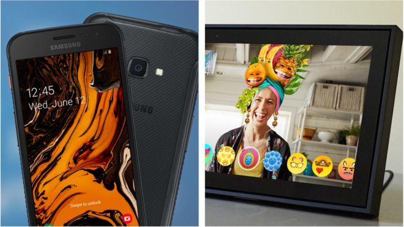

Facebook and Samsung donate thousands of devices to NHS
Mobile giant Samsung is donating 2,000 smartphones to the NHS, for staff to use in Nightingale hospitals.  It will provide Galaxy XCover 4s phones, which are designed to be more robust and can be used while wearing gloves. Samsung said NHS England had already ordered an extra 20,000 phones and tablets, which it had agreed to supply at cost price, without taking a profit. Facebook is also donating 2,050 of its Portal video-calling screens. The Portals are designed to enhance video chats by using artificial intelligence to keep callers in view as they move about a room, making it easier to go about daily activities while continuing a conversation. Facebook said it would send the devices to hospitals and care homes in several locations including Essex, London, Manchester, Newcastle and Surrey. NHS England will be allowed to keep the kit without charge once the pandemic ends. "Technology companies big and small continue to pledge their resources and expertise to support our NHS and social care system in these unprecedented times," said NHSX digital transformation director Iain O'Neil. "Technology has never been so important to providing one of life's most essential things - the ability to communicate with the people we love regardless of where they are." In addition to its donation of 2,000 smartphones, Samsung has also pledged to: install up to 35 sanitising machines at NHS Nightingale hospitals, which use ultraviolet UVC radiation to sterilise things send mobile workshop vans to NHS Nightingale hospitals to offer NHS staff free device repairs donate advertising space on internet-connected Samsung TVs owned by the general public to display NHS health messages "Every one of us is deeply indebted to the NHS and frontline supporters," said Francis Chun, chief executive of Samsung UK and Ireland. "However small the comfort may be, we hope that technology can alleviate some of the anguish this pandemic is inflicting on those most impacted." Other tech companies have also offered discounts to NHS staff including: Microsoft is letting NHS staff use its Teams software for free Uber is offering 50 free rides on its electric bikes taxi-hailing app Free Now is offering 50% off journeys meditation app Headspace is offering a free upgrade to its premium service until December 2020 mobile network Vodafone is automatically upgrading workers who have a pay-monthly contract to give them unlimited data mobile network O2 is offering 25% off new contracts and perks NHS England has compiled a list of deals that have been made available for its staff during the pandemic. https://www.england.nhs.uk/coronavirus/nhs-staff-offers/